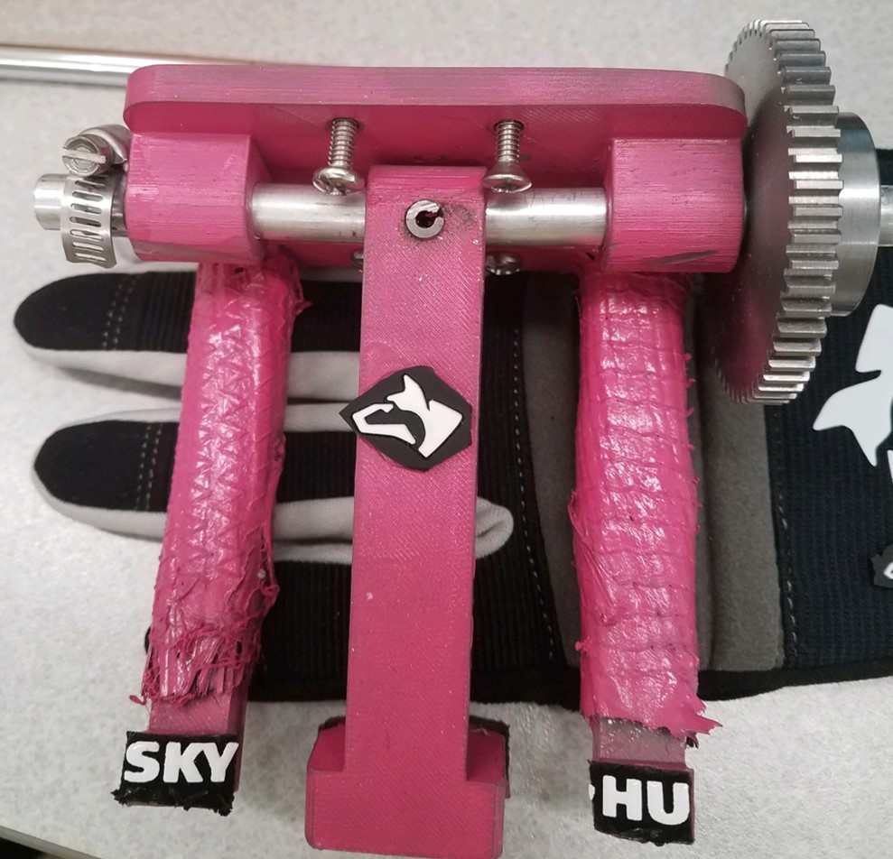
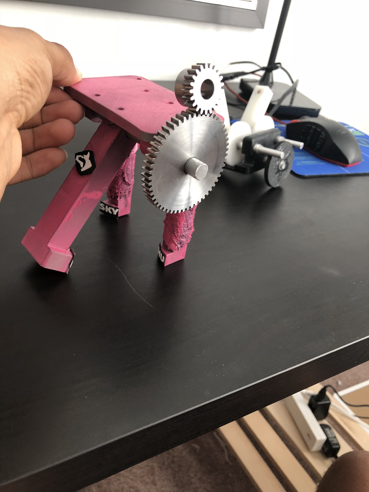

Mechanical Gripper
 This gripper is designed to attach to a provided rod and act as a hand. The gripper had to pick up an aluminum fidget spinner about the size of a rabbit and weighing 2.5 kilograms. What's more, the arm was made to swing down in a semi-circular arc with a radius of around three feet. The task was to hold the 25 kilogram object through the swing with minimal mass.
Ther were two main features we used to ensure the gripper would hold on to the object. The first step was making sure we had enough torque from our gear assembly to support the object in the worst case, when the arm is at the trough of its swing. This was done with pencil and paper, after which the appropriate gears were purchased from McMaster-Carr. Second, to prevent deflection in the arms, we added carbon fiber layups to them. To do this, the arms, originally 3D printed with ABS plastic, were layered with carbon fiber mesh, which in turn was hardened by applying epoxy and leaving it to dry. In the end, the gripper lifted the 2.5 kilogram with a mass of .325 kilograms.